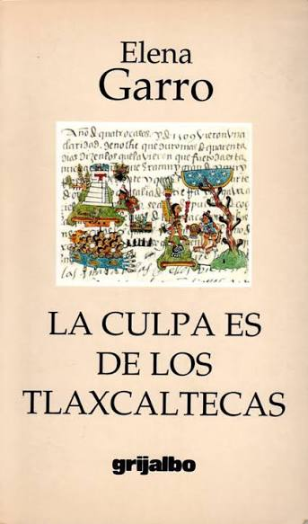

Laura
Protagonista de la historia. Vive en el México contemporáneo al relato, pero experimenta encuentros con el pasado. Representa el conflicto entre la identidad, la memoria y el tiempo.

HISTORIA · MEMORIA · LITERATURA MEXICANA
Laura, una mujer que vive en el México del siglo XX, comienza a experimentar encuentros inexplicables con un hombre perteneciente al pasado indígena. A través de estos encuentros, su vida cotidiana se mezcla con recuerdos de la Conquista de México, la identidad y la traición.
La culpa es de los tlaxcaltecas
Elena Garro
1964
México
Narrativo
Cuento
La semana de colores
Narrativa fantástica, frecuentemente vinculada al realismo mágico
Laura, Nacha, Pablo y el hombre indígena del pasado
Memoria histórica, identidad, tiempo, Conquista de México y traición
La historia presenta a Laura, una mujer que vive en el México del siglo XX. Aunque aparentemente lleva una vida cotidiana, experimenta una profunda conexión con un pasado que parece formar parte de su propia existencia.
Laura conversa con Nacha, la cocinera de su casa, y le cuenta una serie de acontecimientos extraordinarios que ha vivido. Durante una salida con su suegra, Margarita, Laura se encuentra misteriosamente con un hombre relacionado con el México anterior y durante la Conquista.
El hombre parece conocerla desde hace mucho tiempo y la reconoce como alguien perteneciente a su propia historia. Laura siente que ambos están unidos por una relación que trasciende el tiempo.
A medida que ocurren nuevos encuentros, Laura experimenta una mezcla de recuerdos, emociones y acontecimientos del pasado. Para ella, el tiempo no avanza de manera completamente lineal, sino que diferentes épocas parecen coexistir.
En su vida presente, Laura está casada con Pablo, quien no comprende sus experiencias y reacciona con desconfianza y enojo. Esta situación aumenta el conflicto entre su vida cotidiana y su conexión con el pasado.
El cuento también presenta reflexiones sobre la Conquista de México y la idea de la traición. Laura se identifica con una historia de pérdida y culpa, en la que las decisiones del pasado continúan teniendo consecuencias en el presente.
Finalmente, Laura decide abandonar su vida actual para reunirse con el hombre del pasado. Nacha comprende que la protagonista ha elegido seguir esa conexión misteriosa. El desenlace mantiene la unión entre lo histórico, lo fantástico y lo simbólico.
Protagonista de la historia. Vive en el México contemporáneo al relato, pero experimenta encuentros con el pasado. Representa el conflicto entre la identidad, la memoria y el tiempo.
Cocinera de la casa de Laura. Escucha su historia y muestra comprensión hacia sus experiencias. Su presencia es fundamental para la estructura narrativa del cuento.
Esposo de Laura. Representa la vida cotidiana y las convenciones sociales del presente. Reacciona con enojo y desconfianza ante las experiencias de su esposa.
Figura misteriosa relacionada con el pasado de México. Tiene un vínculo profundo con Laura y representa la memoria, el amor y la conexión entre distintas épocas.
Suegra de Laura. Participa en uno de los episodios que desencadenan los encuentros de la protagonista con el pasado.
Trabajadora doméstica de la casa. Forma parte del ambiente cotidiano en el que se desarrolla la historia de Laura.
Entre 1519 y 1521 se desarrollaron campañas militares y alianzas que culminaron con la caída de México-Tenochtitlan. Este periodo constituye una referencia histórica fundamental para el cuento.
Diversos señoríos tlaxcaltecas establecieron una alianza con Hernán Cortés contra el poder mexica. El cuento utiliza la memoria de estas alianzas para reflexionar sobre la culpa y la traición.
La narración relaciona el México del siglo XX con acontecimientos del siglo XVI. Esta mezcla permite explorar la persistencia de la memoria histórica en la identidad de los personajes.
La culpa es de los tlaxcaltecas utiliza acontecimientos y referencias de la Conquista de México para construir una narración sobre la memoria, el tiempo y la identidad. Su relación con el subgénero histórico se encuentra principalmente en la presencia del pasado como parte esencial del conflicto. Sin embargo, la obra también pertenece a la narrativa fantástica, pues presenta encuentros inexplicables entre distintas épocas.
Hemos explorado historias relacionadas con el hundimiento del Titanic, la Segunda Guerra Mundial y la Conquista de México. Ahora nos espera nuestro último subgénero: Aventuras.